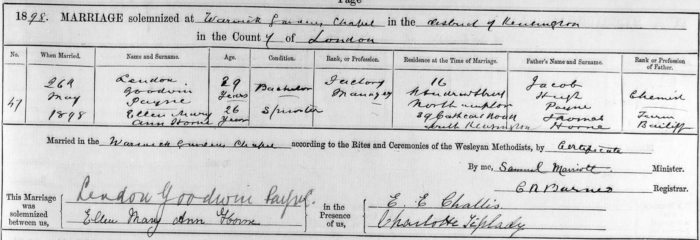

Ellen Mary Ann Payne (née Horne) 1872 - 1967
[ Home ] | [ Calendar ] | [ Surnames Index ] | [ Family History ]The daughter of Thomas Horn (a farm bailiff) and Elizabeth Warner (a general shopkeeper), Ellen Horne, the great-great-aunt of <a href="I1.html">Nigel Horne</a>, was born in Margate, Kent, England on Feb 14, 1872<span class="citation">1,2,3,4</span> and married Lendon Payne (a postman with whom she had 5 children: <a href="I2521.html">Bessie Charlotte</a>, <a href="I2522.html">Thomas Tusting</a>, <a href="I2523.html">Ellen Barbara</a>, <a href="I2524.html">Lendon Harrison</a> and <a href="I2525.html">Leslie Fitzhugh</a>) at Warwick Gardens Methodist Chapel, Kensington, London, England on May 26, 1898<span class="citation">6</span>.</p><p>Throughout her life, Ellen lived in several places: on Buddles Farm, Dane Court Road, St Peters, Thanet, Kent, England on Apr 3, 1881<span class="citation">7</span>; at 194 Reading Street, St Peters in Thanet on Apr 5, 1891<span class="citation">8</span>; on 71 Grange Road in Margate on Apr 2, 1911<span class="citation">9</span>; and in Wembley, London on Sep 29, 1939<span class="citation">2</span>. <p>She died on Feb 15, 1967 in Brent, London<span class="citation">5</span>.
Parents
- Thomas was born c. 1820
- Elizabeth Ann was born on Sep 29, 1826
Children
- Bessie Charlotte was born on Dec 6, 1898
- Thomas Tusting was born on Nov 28, 1899
- Ellen Barbara was born on Apr 18, 1903
- Lendon Harrison was born on Apr 30, 1905
- Leslie Fitzhugh was born c. May 1907
Citations
- 1881 England Census Online publication - Provo, UT, USA: The Generations Network, Inc., 2004. 1881 British Isles Census Index provided by The Church of Jesus Christ of Latter-day Saints © Copyright 1999 Intellectual Reserve, Inc. All rights reserved. All use is subject to the
- 1939 Register - Findmypast (was recorded at this address)
- England & Wales births 1837-2006 - Findmypast
- England & Wales, FreeBMD Birth Index, 1837-1915 Online publication - Provo, UT, USA: The Generations Network, Inc., 2006.Original data - General Register Office. England and Wales Civil Registration Indexes. London, England: General Register Office. © Crown copyright. Published by permission of the Cont
- England & Wales deaths 1837-2007 - Findmypast
- England & Wales Marriages 1837-2005 - Findmypast
- 1881 England, Wales & Scotland Census - Findmypast (was age 9 and the daughter of the head of the household)
- 1891 England, Wales & Scotland Census - Findmypast (was age 17 and the daughter of the head of the household)
- 1911 Census for England & Wales - Findmypast (was age 39 and the wife of the head of the household)
Media
Ellen Horne - Loudon Payne - Marriage

England & Wales deaths 1837-2007 - BMD/D/1967/1/AZ/000784/152
England & Wales births 1837-2006 - BMD/B/1872/1/AZ/000267/242
1891 England, Wales & Scotland Census Transcription - GBC-1891-0005914776
England & Wales marriages 1837-2005 Transcription - BMD-M-1898-2-AZ-000184-192
1939 Register Transcription - TNA-R39-0953-0953A-008-39
1881 England, Wales & Scotland Census - GBC-1881-0004871192
Family Tree

Generated by Ged2Site. Last updated on Jul 20, 2025